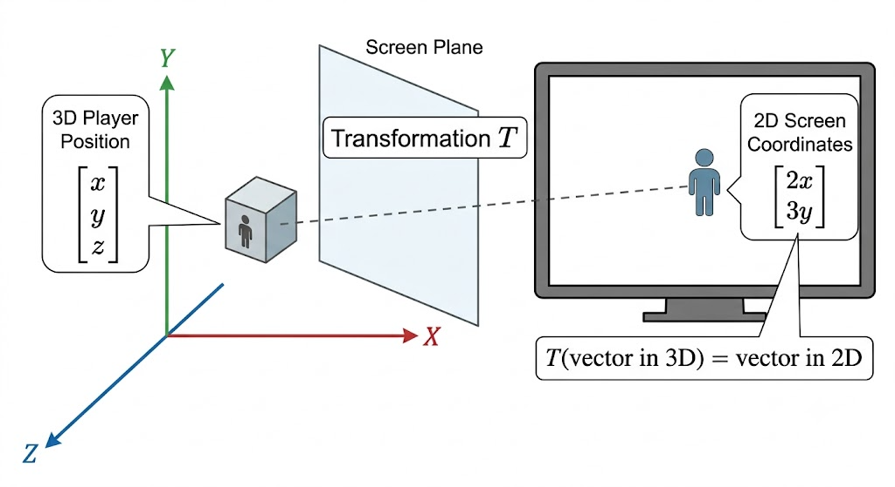
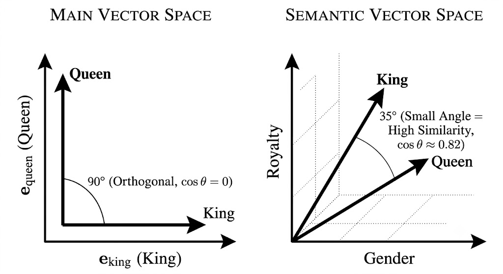

A linear transformation T is a mapping (or function) between two vector spaces, V and W, written as:T:V→WIt takes a vector u from V as input and produces a vector T(u) in W as output, while strictly preserving the following operations:
Note These two rules are often combined into a single linear combination statement:T(cu+dv)=cT(u)+dT(v) Every linear transformation T:Rn→Rm can be represented as multiplication by an m×n standard matrix A:T(x)=AxThe columns of matrix A are simply the outputs of T applied to the standard basis vectors (e1,e2,…,en).
Example Consider the transformation T:R2→R2 defined by:T(x,y)=(2x,x+y)
Solution Let u=(x1,y1) and v=(x2,y2). u+v=(x1+x2,y1+y2)T(u+v)=(2(x1+x2),(x1+x2)+(y1+y2))=(2x1+2x2,x1+x2+y1+y2)T(u)=(2x1,x1+y1),T(v)=(2x2,x2+y2)T(u)+T(v)=(2x1+2x2,x1+y1+x2+y2) Left Side = Right Side. Additivity Holds cu=(cx1,cy1)T(cu)=(2(cx1),cx1+cy1)=(2cx1,c(x1+y1))cT(u)=c(2x1,x1+y1)=(2cx1,c(x1+y1)) Left Side = Right Side. Homogeneity Holds.
Therefore T(x,y)=(2x,x+y) is a LINEAR transformation.
Example Consider the transformation S:R2→R2 defined by:S(x,y)=(x2,y)
Solution Let u=(x1,y1) and v=(x2,y2)u+v=(x1+x2,y1+y2)S(u+v)=((x1+x2)2,y1+y2)S(u)=(x12,y1);S(v)=(x22,y2)S(u)+S(v)=(x12+x22,y1+y2)S(u+v)=S(u)+S(v) Homogeneity fails generally. Therefore S(x,y)=(x2,y) is NOT a linear transformation.
Example Find the standard matrix A for the transformation T:R3→R2 defined by:T(x,y,z)=(2x−3y+z,x+4z).
Solution Since the input vector space is R3, the standard basis vectors are:e1=[1,0,0],e2=[0,1,0],e3=[0,0,1]T(1,0,0)=[2,1]T(0,1,0)=[−3,0]T(0,0,1)=[1,4]A=[T(e1)T(e2)T(e3)]=[21−3014]
Verification: Let x=xyz: Ax=[21−3014]xyz=[2x−3y+zx+0y+4z]=[2x−3y+zx+4z]=T(x)
Example A game engine needs to convert 3D player coordinates into 2D screen coordinates using an orthographic projection transformation T:Txyz=[2x3y]

Figure 9. Projection from 3D coordinates to 2D coordinates
Find the standard transformation matrix A such that T(x)=Ax.
Determine where an in-game character located at 3D position p=54100 will be displayed on the 2D mini-map.
Solution The input space is R3, so the standard basis vectors are:e1=100,e2=010,e3=001A=[T(e1)T(e2)T(e3)]=[200300]T(p)=[1012]
2.2Standard matrices for the four core linear transformations in R2#
TransformationRotation (θ)Reflection (x-axis)Reflection (y-axis)Dilation (k>1)Contraction (0<k<1)StandardMatrixA[cosθsinθ−sinθcosθ][100−1][−1001][k00k][k00k]det(A)+1−1−1k2k2KeyPropertyPreserves lengths and orientationPreserves lengths, reverses orientationPreserves lengths, reverses orientationExpands area by factor of k2Shrinks area by factor of k2
The coordinate vector of x relative to basis B, denoted [x]B, is simply the column of weights (c1,c2,…,cn) used in that linear combination:[x]B=c1c2⋮cn
Example Suppose we have a non-standard basis B={[11],[02]} in R2. If a vector in standard coordinates is x=[38], what is [x]B?
Solution Set up the vector equation:[38]=c1[11]+c2[02]Solve the linear system: From Row 1: 1c1+0c2=3⟹c1=3
From Row 2: 1c1+2c2=8⟹3+2c2=8⟹c2=2.5
The coordinate vector relative to basis B is:[x]B=[32.5]
Example In the above NLP example: xKing=100⋮0 If we want to express xKing as a linear combination of our 3 orthonormal semantic basis vectors B={vRoyalty,vGender,vAge} Each basis vector is an evaluation checklist containing 10,000 weights: vRoyalty=0.990.990.70⋮0.00(King),vGender=0.95−0.950.00⋮0.00(King),vAge=0.800.800.10⋮0.00(King)100⋮0=c10.990.990.70⋮0.00+c20.95−0.950.00⋮0.00+c30.800.800.10⋮0.00 By solving we get [xKing]B=c1c2c3=0.990.950.80
Key takeaway
By redefining our reference frame from word based axes to a set of abstract concept axes (B={vRoyalty,vGender,vAge}), we project high dimensional sparse vectors onto a dense, lower dimensional semantic subspace
2.4Orthogonal Projections and Gram-Schmidt method#
Definition Two vectors u and v in an inner product space (such as Rn) are orthogonal if their inner product (dot product) is zero:u⋅v=0

Figure 11. Orthogonality in main Vocabulary Vector Space
Orthogonal Set: A set of vectors {v1,v2,…,vk} is orthogonal if every pair of distinct vectors is orthogonal (vi⋅vj=0 for all i=j).
Linear Independence: Any set of non-zero orthogonal vectors is automatically linearly independent.
Definition The orthogonal projection of a vector y onto a non-zero vector u decomposes y into two components: one component parallel to u, and one perpendicular to u.projuy=(u⋅uy⋅u)u
Definition If W is a subspace spanned by an orthogonal basis {u1,u2,…,uk}, the orthogonal projection of y onto W is the sum of its projections onto each basis vector:projWy=i=1∑k(ui⋅uiy⋅ui)ui
NoteprojWy is the closest point in W to the vector y. The error vector (y−projWy) is orthogonal to every vector in W.
Key takeaway
1. Standard word embeddings often accidentally learn societal biases (e.g., associating certain professions with gender). Linear projections are used to remove bias without destroying semantic meaning:
Identify the Gender Subspace (W): Compute a direction W spanned by gendered difference vectors (e.g., vhe−vshe, vman−vwoman).
Project and Subtract: To debias a neutral word vector like xdoctor, calculate its projection onto the gender subspace projW(xdoctor) and subtract it:xdebiased=xdoctor−projW(xdoctor)This removes gender bias while preserving the core semantic properties of "doctor".
Key takeaway
2. Dimensionality Reduction & PCA: When compressing embeddings, Principal Component Analysis (PCA - will be discussed later) identifies a lower dimensional subspace W that captures the maximum variance of the text dataset. Projecting all document vectors onto W compresses storage while retaining the vast majority of semantic relationships.
Definition A set of vectors {q1,q2,…,qk} in Rn is an orthonormal basis if:
Orthogonal: qi⋅qj={10if i=jif i=j
Normalized: Unit Length: ∥qi∥=qi⋅qi=1
Definition Gram-Schmidt method is an algorithm that converts any linearly independent set of vectors {x1,x2,…,xk} into an orthonormal set {q1,q2,…,qk} spanning the same subspace. Procedure: Given linearly independent vectors {x1,x2,…,xk}, construct the orthonormal basis {q1,q2,…,qk} step-by-step:
Definition QR Factorization decomposes a matrix A into the product of an orthogonal (or orthonormal) matrix Q and an upper triangular matrix R:A=QR
Q (Orthonormal Columns): An m×n matrix whose columns q1,q2,…,qn are mutually perpendicular unit vectors (QTQ=I).
R (Upper Triangular): An n×n upper triangular matrix containing the inner products (projection coefficients) that reconstruct A from Q.
Procedure: Given a matrix A=(a1a2⋯an) with linearly independent columns:
Step 1: Orthogonalize & Normalize (Q): Apply the Gram-Schmidt process to columns aj to obtain unit orthogonal vectors qj.
Step 2: Because the columns of Q are orthonormal, the dot product of any column with itself is 1, and with any other column is 0. This identity property is expressed as:QTQ=I Hence, the Projection Coefficients (R) is given by: R=QTA
Example Factorize the matrix A in to QRA=110101
Definition Least squares approximation solves an overdetermined system Ax=b when no exact solution exists by finding a vector x^ that minimizes the squared Euclidean distance ∥Ax^−b∥2. Geometrically, it projects the target vector b orthogonally onto the column space of A.
When b lies outside the column space of A, the error vector e=b−Ax^ cannot be zero. To minimize the length of e, e must be orthogonal (perpendicular) to every column in A:
For e to be perpendicular to every vector in Col(A), it must be perpendicular to each column vector ai:a1⋅e=0,a2⋅e=0,…,an⋅e=0 This gives a system of equations a1Tea2Te⋮anTe=00⋮0 or simply ATe=0⟹AT(b−Ax^)=0ATAx^=ATbx^=(ATA)−1ATb In practice, computing (ATA)−1 directly causes numerical instability. Substituting A=QR simplifies the normal equations significantly: (QR)T(QR)x^=(QR)Tb Since QTQ=I: Rx^=QTb Because R is upper triangular, x^ is solved quickly and accurately using simple back-substitution.
Example Find the least squares solution x^ for Ax=b: A=110101,b=412
Solution The Q and R matrices are computed in the previous example: Q=1/21/201/6−1/62/6;R=(201/26/2)
Example Suppose we want an AI algorithm to predict a movie’s star rating (y, from 1 to 5) automatically by counting key sentiment words in review text. We model the star rating as a linear combination of word counts: Rating=w1⋅(count of "great")+w2⋅(count of "boring")+b We need to solve for three unknown parameters: word weights w1,w2 and the base rating b.
2. Plugging these word counts into your formula yields the linear system Aw≈b: 2w1+0w2+b0w1+2w2+b1w1+1w2+b2w1+1w2+b0w1+1w2+b=5.0=1.0=3.0=4.0=2.0 3 Unknowns (n=3): Weights w1,w2 and baseline b.
5 Equations (m=5): 5 real-world reviews.
Because 5>3 (far more review equations than unknown word weights), the system is overdetermined.
Human language is inherently noisy and subjective. Notice that Review 2 gave 1 star for 2 "boring"s, but Review 5 gave 2 stars for 1 "boring".These equations contradict one another. No single combination of (w1,w2,b) can draw a plane that passes through all 5 review data points perfectly. An exact solution does not exist.
Least Squares finds the single best weight vector w^ by minimizing the total squared prediction error across all reviews:w1,w2,bmini=1∑5(Predicted Ratingi−Actual Ratingi)2Result: It outputs the best statistical weights (e.g., w1=+1.1, w2=−0.9, b=2.8).
Key takeaway
Without human supervision telling the computer what words mean, least squares optimization assigns positive values to praise (e.g., w1=+1.1 for "great") and negative values to criticism (e.g., w2=−0.9 for "boring").